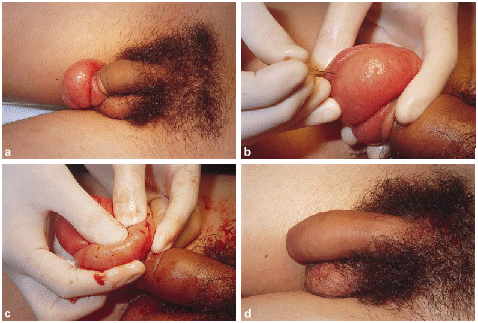

POINT OF TECHNIQUE
Indications
The traditional treatment of paraphimosis which cannot be easily reduced is a dorsal slit followed by circumcision, either under the same anaesthetic or later, when the preputial oedema has resolved. As an emergency procedure this traditional treatment can be time-consuming. In addition, distortion of tissue planes by marked preputial oedema can make such surgery technically difficult and may result in a less than perfect cosmetic result. We report a simple technique for the reduction of paraphimosis, which we have termed the Dundee technique in recognition of the hospital in which we first became aware of its use.
MethodBetween January 1996 and August 1998, 17 males presenting with paraphimosis to the Emergency Departments of the Royal London Hospital, Harold Wood Hospital and more recently Christchurch Hospital, New Zealand, had their paraphimosis reduced using the Dundee technique. Previous attempts at reduction by the application of lubricants and ice-packs combined with manual manipulation of the prepuce had failed to reduce the paraphimosis in all cases. In most cases, ring-block local anaesthesia using 10-20 ml of 0.5% marcain was used; in three cases general anaesthesia was used, in two boys aged 8 and 10 years and in another case at the request of the patient. The oedematous prepuce (Fig. 1 A) was cleaned with an antiseptic cream. A 26 G needle (outer diameter 0.45 mm) was used to make 20 puncture holes in the oedematous prepuce (Fig. 1 B). Using gentle but firm pressure, the oedema fluid was expressed from the foreskin (Fig. 1 C) until it had been completely decompressed, allowing easy reduction of the prepuce (Fig. 1 D).

The patients ranged in age from 8 to 81 years; the median (range) duration of paraphimosis was 48 (24-168) hrs. Three patients had indwelling catheters. The paraphimosis was reduced successfully in all patients, in 14 of them under local anaesthesia, and they were discharged from the Emergency Department. The three patients who underwent reduction under general anaesthesia were discharged the following morning. Five patients underwent elective circumcision for phimosis; this was technically easy to perform with a good cosmetic result. The remaining 12 patients had no evidence of phimosis and circumcision was unnecessary. None of these 12 patients returned with recurrent paraphimosis during this study.
Advantages and disadvantages
Paraphimosis is a common condition, but it is our perception that many doctors who treat it are unaware of alternatives to the dorsal slit. Hamdy and Hastie [1] first reported the use of this technique to reduce A paraphimosis and we have shown that it can be successfully applied in A group of men many of whom have had A prolonged (more than 24 H) paraphimosis. Many urologists perform circumcision under local anaesthetic ring block or dorsal nerve block and this method of anaesthesia is therefore a familiar one. Reduction of paraphimosis using the Dundee technique is easy to perform in an emergency department and obviates the need for general anaesthesia in most cases. Subsequent circumcision is often unnecessary, but when it is required it can be done as an elective procedure which is technically easier, so allowing a good cosmetic outcome.
References
1 Hamdy FC, Hastie KJ. Treatment for paraphimosis: the "puncture" technique. Br J Surg 1990; 77: 1186
http://www.cirp.org/library/treatment/phimosis/reynard1/